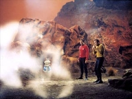
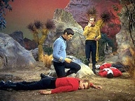
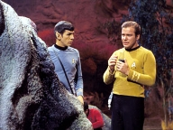
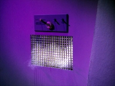
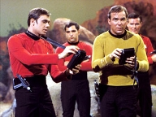
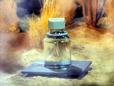

|
MANCHETE
DO EPISDIO
Obra Clssica inspira Jornada
Literria
Episdio
anterior | Prximo episdio Sinopse:
Data Estelar:
3619.2.
 Kirk e Spock junto com uma
equipe de segurana da Enterprise, esto conduzindo uma pesquisa no planeta
Argus X, quando o capito percebe um cheiro familiar. Imediatamente ele ordena
uma busca pele permetro e coloca os tripulantes em alerta, com instrues de
procurar pela substncia conhecida como dikironium na atmosfera, e para atirar
em qualquer nuvem de gasosa que eles possam encontrar.
Kirk informa a Scott que pretende ficar no planeta e concluir a investigao
que iniciou, apesar do engenheiro chefe lembr-lo de que a Enterprise tem um
importante encontro com a USS Yorktown em cerca de oito horas.
A equipe de segurana encontra a nuvem e a abre fogo, mas a ao intil
contra a criatura. Eles tentam avisam a Kirk, mas quando este e Spock chegam ao
local, descobrem dois tripulantes mortos, e um terceiro, o alferes Rizzo, em
estado grave que levado de volta a nave para tratamento.
A bordo da nave, Chappel informa a Kirk e McCoy que Rizzo permanece
inconsciente. Todos os glbulos vermelhos do sangue do tripulante foram de
alguma forma, sugados, e o mesmo permanece vivo a graas a uma massiva transfuso
de sangue, procedimento que no suficiente para salvar a vida de Rizzo.
A autopsia dos tripulantes mortos revela que todas as clulas vermelhas do seu
sangue foram removidas sem que qualquer marca em seu corpo pudesse ser
encontrada. Kirk mantem a Enterprise em rbita para investigar o mistrio,
apesar dos protestos de Spock, Scott e McCoy. A Yorktown aguarda a chegada da
Enterprise com um carregamento de vacinas para debelar uma epidemia no planeta
Theta VII. Mesmo assim, Kirk matem a sua deciso.
McCoy parece no ter pistas sobre o que aconteceu aos tripulantes, mas o capito
sugere medico procure nos registros da U.S.S. Farragut, por mortes com as mesmas
caractersticas h onze anos atrs, quando Kirk servia a bordo ainda como um
jovem tenente.
A pedido de Kirk, McCoy reanima Rizzo. Embora este ainda esteja semi-consciente,
Kirk questiona o alferes sobre o que aconteceu ao grupo na superfcie. Ele
pergunta se o homem teria sentido um cheiro adocicado, fato confirmado pelo
tripulante. Kirk que saber se Rizzo teria percebido alguma inteligncia na
suposta criatura, mas o tripulante adormece novamente.
Kirk retorna a ponte, onde ignora o informe de Uhura sobre uma mensagem urgente
do comando da Frota Estelar. Ao receber de Spock a informao de que a busca
atravs dos sensores negativa, ele comea a fazer conjecturas sobre os
motivos da no deteco da suposta criatura. O capito parece acreditar que
este ser composto de um material raro, que capaz de se camuflar e
inteligente, ao ponto de evitar a deteco pelos sensores da nave. Spock
teoriza que para isto, a criatura deveria ser capaz de mudar sua estrutura
molecular. Em seguida, seguindo a sugesto de Kirk, Spock segue para a
enfermaria a fim de examinar os registros da Farragut junto com McCoy.
Ao mesmo que tempo que recebe a noticia da morte do alferes Rizzo, Kirk recebe o
novo oficial de segurana, o alferes Garrovick, que era amigo do falecido
oficial. Kirk ordena que o alferes forme uma equipe armada para descer com ele
ao planeta e caar a criatura.
Uma vez na superfcie, eles localizam a criatura, e Kirk ordena que o grupo se
divida em dois, com Kirk no comando de um deles e Garrovick no outro, na
tentativa de tentar cercar e atac-la. O grupo liderado pelo alferes encontra a
criatura primeiro e atacado. O alferes atira, mas perde um segundo para tomar
a deciso, dando tempo de o seu grupo ser envolvido pela massa gasosa. Kirk
ouve os disparos e corre para ajudar, mas quando chega, encontra apenas
Garrovick, de p observando os dois tripulantes cados ao cho.
O grupo de descida retorna a nave. Um dos tripulantes atacado est morto e o
segundo em estado grave, e Kirk convencido de que esta criatura a mesma que
atacou a Farragut onze anos atrs. McCoy, Spock e Garrovick encontram se com o
capito para discutir o relatrio do alferes, que conta os detalhes de sua
experincia, inclusive sua hesitao em atirar. Como punio pelo que
considerou uma falha em sua aes, Kirk retira o alferes de servio e ordena
que ele permanea confinado em seus alojamentos, apesar de Spock e McCoy
demonstrarem no concordar com esta deciso.

De volta a ponte, Kirk recebe a informao de que a nave estar pronta para
partir em meia hora, mas Kirk diz que ainda no pretende deixar a rbita do
planeta. Scott mais uma vez lembra ao capito a necessidade dos remdios
transportados pela Enterprise em Theta 7, irritando Kirk, que perde
momentaneamente o controle da situao, dizendo estar cansado de ter seus
oficiais superiores conspirando contra ele. Apesar de perceber seu erro e
declarar isto imediatamente a Scott, ele chama a ateno de Chekov severamente
quando o alferes informa no estar conseguindo localizar a criatura na superfcie
do planeta.
.
Enquanto isto, Spock procura McCoy a respeito da fixao do capito da
Enterprise pela busca da criatura. Spock informa a McCoy que 11 anos antes, Kirk,
sob o comando do capito Garrovick, ento oficial comandante da Farragut,
esteve diante de uma situao similar a que esto enfrentando agora. O capito
da Farragut era pai do alferes Garrovick.
Pouco tempo depois, McCoy vai at o alojamento de Kirk para discutir sua
recentes aes. O medico demonstra estar a par dos eventos de onde anos atrs,
quando Kirk era um jovem alferes servindo a bordo da Farragut. McCoy sugere que
Kirk considera-se culpado pelos eventos ocorridos naquela poca, incluindo a
morte de seu capito e mais duzentos homens da tripulao. Como o alferes
Garrovick, Kirk hesitou em atirar na criatura.
McCoy alega que Kirk era muito jovem, que no pode cuploar-se por isto, e
apresenta como prova o registro do prprio capito Garrovick sobre suas aes
anos atrs, mas Kirk insiste que poderia ter destrudo a criatura, e com isto
evitado as mortes da tripulao. Ele acredita que a criatura e m,
inteligente, e que deve ser destruda, o que McCoy classifica como obsesso.
Kirk reage mal a critica de McCoy, e este ento informa que pretende fazer um
relatrio medico sobre a condio psicolgica do capito tendo como base
sua conduta a respeito deste assunto. Para isto conta com o apoio de Spock, como
testemunha necessria ao processo, e que se encontrava esperando do lado de
fora do alojamento de Kirk.
Os dois ento passam a questionar Kirk sobre suas recentes decises de
comando, e o capito inicialmente tem sucesso em defender sua posio junto
as seus dois oficiais. Ele argumenta que se sua suposio estiver correta, e
esta for a mesma criatura que atacou a Farragut anos atrs, tal suposio
indica que a criatura seria capaz de viajar pelo espao, o que a torna um
perigo para a navegao inter estelar. McCoy e Spock so sensibilizados pela
argumentao de Kirk, e decidem apoi-lo, por enquanto. Kirk por sua vez
aceita as ponderaes de seus oficias, entendendo que o que fizeram foi para o
bem maior da nave e sua tripulao.
Neste momento Chekov comunica que detectou a nuvem, deixando o planeta. Kirk
ordena que curso de perseguio, mas a nuvem consegue imprimir uma velocidade
superior a dobra 8, velocidade que a Enterprise no poder sustentar por muito
tempo, sem danificar os motores. Aps alguma hesitao, Kirk abandona a
perseguio da nuvem.
Neste meio tempo a enfermeira Chapel vai at o alojamento de Garrovick, levar
comida ao alferes, ainda se culpa por no ter destrudo a criatura na superfcie.
Chapel diz ao alferes que a nave esta caando a criatura pelo espao, e que o
capito perdeu o seu senso de perspectiva. Ela tenta animar Garrovick, mas no
tem muito sucesso. Quando ela sai, o alferes joga atira para longe a bandeja,
que danifica o controle de ventilao sem que ele perceba.
Na ponte, a criatura que seguia em fuga reduz a velocidade, e Kirk aproveita
para atac-la. A nave entra em alerta vermelho, o que faz Garrovick deixar o
alojamento e ir at a ponte, onde solicita permisso para voltar ao seu posto.
A Enterprise atira tudo o que tem contra a criatura, mas a ao no tem
nenhum efeito, alm de fazer a nuvem se voltar contra a nave. Os escudos
defletores no so capazes de deter a nuvem, que entra na nave atravs de uma
abertura de ventilao dos motores de impulso, ataca dois tripulantes e se
instala no sistema de ventilao. Kirk ordena a reverso da ventilao, mas
isto deixa apenas duas horas de ar para a tripulao.
Os oficias superiores esto agora discutindo a situao, a qual McCoy
atribuiu a obsesso de Kirk pela caada a criatura. Spock conclui que a
criatura resolveu inverter os papeis, e se tornar caador ao invs de caa,
tambm que as aes da criatura indicam inteligncia. Scott deixa a sala com
ordens de inundar o sistema de ventilao com lixo radioativo, numa tentativa
de eliminar ou ao menos expulsar a criatura, seguido por McCoy, que antes de
sair pede desculpas a Kirk pelo seu julgamento, segundo o prprio doutor,
equivocado, das aes do capito.
Spock, agora sozinho com Kirk, tenta faz-lo aceitar que as armas se mostraram
ineficazes contra a criatura devido as suas habilidades nicas, logo Kirk no
teria tido sucesso em eliminar a criatura onze anos atrs, tanto quanto agora.
Kirk no demonstra nenhum tipo de alivio por conta disto.
Mais tarde, Spock vai at o alojamento de Garrovick tentar convenc-lo que sua
hesitao no planeta teria sido fruto de biologia humana, portanto natural e
esperada para a sua espcie, mas ele subitamente interrompido ao perceber um
odor no ambiente que indica a presena da criatura. Eles percebem que a nuvem
est saindo pela ventilao. Spock empurra o alferes para fora do alojamento
enquanto tenta deter a criatura, usando as prprias mos, aps perceber que
os controles de ventilao esto quebrados.
Garrovick avisa ao comando. Kirk manda que a presso seja revertida e depois
segue em direo ao alojamento. Apesar da preocupao de todos, Spock sai do
alojamento sem sinal de ter sido afetado pela criatura. A avaliao de que
como o sangue vulcano baseado em cobre, sua hemoglobina no atendia as
necessidades da dieta da criatura. O capito entra na cabine, e nota que
o cheiro deixado desta vez diferente, e que de alguma forma parece agora
entender a criatura. Eles so avisados por Scott que a nuvem deixou a nave de
volta pelo mesmo lugar por onde entrou.
O grupo volta a ponte, mas antes, Kirk conversa com Garrovick a respeito da
ineficincia dos fasers da Enterprise, da mesma forma, como os fasers de mo
seriam, no havendo por isto motivo para que Garrovick se recriminasse pelas
suas aes quando comandava o grupo em terra. O capito libera Garrovick para
o retorno ao servio, e se dirige ao comando.

Na ponte, Chekov que a nuvem se move em alta velocidade para longe do alcance
dos sensores da Enterprise. Apesar de no ser capaz de acompanh-la, Kirk
acredita saber para onde a nuvem se dirige. De alguma forma, ela acredita que o
cheiro que sentiu na cabine de Garrovick indicava casa, e que casa
seria o planeta Tycho IV, onde a Farragut havia sido atacada onze anos antes.
Apesar da objeo de McCoy, ainda em funo da urgncia em encontrar a
Yorktown, o capito decide levar a nave at Tycho IV, pois existem evidncias
de que a criatura pretende se reproduzir.
montado um plano envolvendo o uso de anti-matria para destruir a criatura,
e sangue dos estoques da enfermaria da Enterprise para atra-la a armadilha.
Kirk e Garrovick descem ao planeta para executar a tarefa. Entretanto, um
imprevisto acontece: na superfcie, enquanto os dois posicionam a bomba
de anti-matria, a criatura consome o hemoplasma, deixando os dois sem a isca.
Kirk ento decide colocar a si mesmo no papel de isca.
Ele ordena que Garrovick retorne a nave, mas o alferes tenta nocautear Kirk,
para mand-lo de volta a nave, e ficar como isca. Ele falha na ao, a ambos
acabam como isca da criatura, que agora se move na direo dos dois. Eles
aguardam at o ultimo instante possvel e ento detonam a bomba, ao mesmo
tempo em que a Enterprise tenta tele transportar os dois de volta.
Apesar das dificuldades extras causadas pela reao da exploso, Spock tem
sucesso em trazer os dois de volta, e a criatura destruda com sucesso. Com
a questo solucionada, Kirk convida Garrovick para contar ao rapaz algumas
historias sobre o pai dele, e a Enterprise finalmente segue para encontrar a
Yorktown.
Comentrios:
Segundo episodio da Srie
Clssica inspirado no clssico de Hermann Melville, Moby Dick, (o
primeiro foi o clssico "The Doomsday Machine"),
e que no por acaso seria fonte de inspirao de outras aventuras adiante na
franquia. fcil reconhecer a sombra da baleia branca em outros segmentos
importantes de Jornada, como Jornada nas Estrelas II: A Ira de Khan
(1982) e Primeiro Contato (1996), dois dos filmes mais festejados da
Historia de Jornada no cinema.
"Obsession" tambm tem o seu valor, embora o seu potencial
dramtico se esvaia um pouco, medida que o episodio caminha para o seu final
e a fixao de Kirk pela perseguio da criatura gasosa revela-se correta,
afinal Kirk o heri, e justamente por isto o segmento perde muito da fora
que sugere no inicio. Em Moby Dick, os protagonistas se revezam, e pouco a
pouco, medida que o Pequod navega para o prprio fim, percebemos que o
verdadeiro heri na verdade a Baleia, e no Ahab, e neste sentido, "The
Doomsday Machine" tem muito mais a ver com a obra de Melville do
que o atual segmento.
Sobre o episodio em si, mais uma vez precisamos fazer uso da suspenso de
descrena, pois alguns fatos necessrios ao seu andamento precisam de boa dose
de boa inteno por parte do espectador. O primeiro deles o fato da
Enterprise estar se dando ao luxo de conduzir pesquisas de minrio em um
planeta afastado, enquanto precisa se encontrar com a USS Yorktown e transferir
vacinas vitais para debelar uma epidemia.

Mesmo aceitando que a Enterprise tenha um tempo de folga antes do tal encontro,
(o que foi desmentido logo depois), mandaria o bom senso que ela prosseguisse
rumo ao seu compromisso de muito maior importncia, e que depois outra nave,
como acabou acontecendo, conduzisse tal pesquisa. Este bom senso contrariado
apenas para que Kirk pudesse encontrar a criatura, que alias, numa clara
reverencia a Moby Dick, ele reconhece pelo cheiro, como detalharemos mais
tarde.
A emergncia no planeta Theta VII outro elemento introduzido de forma forada,
para criar um senso de urgncia quanto partida da Enterprise. No houvesse
motivo para seguir viagem logo, todo o comportamento de Kirk seria factvel com
o seu modus operandi normal e no haveria, portanto nenhum motivo para qualific-lo
de obsessivo, tornando este mais um exemplo de caa a criatura malvada da
semana. O autor aceita neste caso o axioma Os fins justificam os meios.
De volta aos acontecimentos iniciais do planeta, aps a serie de mortes
mostrarem os elementos bsicos que permitissem ao capito comear a
identificar a nuvem encontrada na superfcie como a mesma criatura que atacou a
USS Farragut, onze anos antes, o segmento comea a ficar interessante, pois
comea a lidar com fatos que estavam a adormecidos na mente de Kirk. Ele se
considera de alguma maneira culpado pela morte de vrios tripulantes da nave
onde servia, assim como do capito Garrovick, ento seu oficial comandante.
Os fatos vo sendo revelados paulatinamente, de forma que proposta a audincia
a idia que Kirk nutre um sentimento de vingana, e mais do que isto, busca
algum tipo de redeno contra a criatura. As constantes interpelaes de
seus oficias superiores a respeito da insistncia do capito em manter a
Enterprise em rbita, comprometendo o seu posterior encontro reforam tal
associao.
Outra coincidncia por demais forada a presena do alferes Garrovick,
filho do falecido capito Garrovick a bordo da Enterprise (sem que Kirk tivesse
conhecimento at ento ), sendo ele o prximo oficial na linha de comando da
segurana, o que o levaria a condio de liderar o grupo que procurou e
combateu a criatura, em terra posteriormente.
A presena de Garrovick pouco ou mal explorada no segmento. Ele funciona
quase como um reflexo, onze anos mais jovem, trazendo ao espectador a
possibilidade de conhecer um pouco do ento tenente Kirk. Tivesse um pouco mais
de espao, e fosse o segmento conduzido atravs deste personagem, talvez o
mesmo ganhasse muito em qualidade dramtica, mas como isto no acontece,
Garrovick, bem como toda a informao sugerida a respeito do passado de Kirk
servem apenas para engrossar os compndios da Srie Clssica.
De toda forma, a questo sobre a eficincia dos fasers contra a tal criatura
tambm superficial demais. Onze anos antes Kirk poderia at achar que os
fasers fariam algum efeito contra ela, mas aps ouvir a opinio de Spock a
respeito, j dava para perceber que um ser com as caractersticas sugeridas
pelo roteiro no sofreria efeito dos fasers.

Um ponto da trama que tambm merece ateno a necessidade de estabelecer
que tal criatura inteligente. Kirk persegue tal possibilidade, tentando de
toda forma determinar que a criatura no age por instinto, mas que planeja sua
aes, e que tais aes so essencialmente ms. Um comportamento oposto,
por exemplo, ao notado em Devil in The Dark, quando a constatao
de que a Horta era um ser inteligente serviu para que o eixo da trama
daquele segmento mudasse radicalmente, permitindo a sua sobrevivncia, e mais,
cooperao mutua.
Neste ponto onde Kirk mais se assemelha a Ahab. Ele deixa claramente os
acontecimentos de seu passado determinar suas aes e seu julgamento. No h
na mente de Kirk nenhuma chance de tentar compreender, e quem sabe, encontrar
uma sada pacifica. Para ele, a criatura m, e deve ser destruda, tal
como Ahab acredita ser sua Moby Dick, muito mais que uma Baleia, mas a encarnao
do mal, quase invencvel.
Da mesma forma somos levados a crer que a criatura de Kirk um ser indestrutvel,
capaz de esconder, imune as suas armas, e capaz de atacar de forma traioeira e
mortal.
Ele pune Garrovick, mas na verdade est punindo a si mesmo, pelo seu suposto
erro anterior. Kirk tambm demonstra sinais de parania ao criticar o
comportamento de sua tripulao, que a todo o momento o relembram da
necessidade de seguir viagem.
Porem, justamente quanto o roteiro caminha para atribuir a Kirk elementos que
depem contra sua sanidade mental, a trama muda de eixo. Kirk comea a
questionar a correo de suas atitudes, o que o primeiro indicativo de que
ele est no controle emocional de suas aes. Quando interpelado por Spock e
McCoy, ele reconhece a legitimidade da ao de seus dois oficiais, o que refora
tal sentimento.
Da em diante, Kirk assume de novo o comando, e volta a ser o heri que
conhecemos. Ele consegue argumentar de forma razovel com os dois a respeito de
suas motivaes, e ento, por mais um coincidncia de roteiro, a criatura
surge, deixando o planeta em velocidade de obra, comprovando uma das teorias do
capito, de que tal ser capaz de se mover pelo espao.
A Enterprise comea ento a sua caada, e mais uma vez Kirk precisa tomar uma
deciso critica: continuar a perseguir a nuvem pelo espao, e comprometer a
segurana da nave, ou recuar. Ele recua, mostrando mais uma vez que est no
controle da situao e comeando a reconquistar o apoio de seus oficiais.
Desta vez a criatura que muda de ao. Aps deixar claro que pode superar
a Enterprise em velocidade, ela se volta para atacar a nave, assim como Moby
Dick ataca o Pequod, sem aviso, dando a Kirk a desculpa que precisa para combat-la.
Aps de voltar contra a nave e se instalar em seu interior atravs de uma
abertura que fica conveniente aberta, voltamos ao debate sobre a caa da
criatura. McCoy ainda no se convenceu totalmente, mas Spock agora j no tem
duvidas de que preciso combat-la, em outro impressionante paralelo com
Moby Dick.
L, apesar dos diversos sinais que surgem ao longo da narrativa apontar para
uma tragdia, os homens do Pequod, vo cedendo mesma obsesso e Ahab,
inclusive Starbuck, seu leal primeiro oficial, um homem gentil e prudente, mas
que acaba por ceder a fixao de seu capito. Da mesma forma Spock, por meio
da lgica que guia suas aes, acaba se unindo filosoficamente a Kirk em sua
caada.
Spock tambm tem uma participao singular aqui, primeiro ao tentar confortar
da maneira que pode tanto Kirk quanto Garrovick, depois, por tentar deter a
entrada da nuvem no alojamento (atravs da entrada de ventilao
convenientemente quebrada pelo alferes, pouco tempo antes) de Garrovick com as mos
em uma atitude totalmente ilgica, visto que era obvio que tal ao era
impossvel.
A presena da criatura no quarto de Spock permite mais um momento inspirado
literalmente nas paginas do romance de Melville. A bordo do Pequod, em certo
momento, no capitulo que precede a caada final a grande baleia branca, Ahab
parece perceber a sua insanidade, e esta prestes ordenar o retorno do navio, mas
ento ele sente o cheiro da baleia, e a caada recomea. A bordo da
Enterprise, Kirk sabe, pelo cheiro, que a criatura vai para casa, e por extenso
sabe o que significa casa para ela.
Segue-se ento a concluso da ultima pendncia. Kirk finalmente percebe a
inutilidade de suas aes. Ele libera Garrovick de sua culpa, e ai fazer isto,
libera si mesmo de sua prpria culpa.
Deste ponto em diante, este segmento assume os contornos de um tpico episodio
semanal da Srie Clssica. Kirk ira liderar a Enterprise e sua tripulao em
mais uma misso que ir salvar a galxia de uma perigosa criatura espacial,
usando para isto um dispositivo High tech (a bomba matria anti-matria)
criado a ultima hora, com direito a uma dose de herosmo de Garrovick e Kirk.
Este um episodio do grande trio, e o resto da tripulao literalmente faz
ponta. Mesmo Stephen Brooks, cujo personagem (Garrovick) um componente
essencial da trama, no tem tanto espao para trabalhar, e conta com um
material muito limitado. Shatner, Nimoy e Kelley apresentam a costumeira qumica,
e trabalham de forma satisfatria e competente ao longo do episodio, mas no h
destaques.
A percepo da criatura como uma entidade m simplesmente, e totalmente
unidimensional, vai de encontro s necessidades de roteiro, mas reduz muito a
qualidade dramtica do segmento, e peca um pouco contra a mensagem de
entendimento geralmente proposta pelos melhores episdios de Jornada,
mas nada que agrida a integridade da srie como um todo, e apenas torna a
concluso um pouco previsvel.

No fim de tudo, o excesso de coincidncias necessrias viabilidade do
segmento, a falta de um melhor aproveitamento do personagem Garrovick, bem como
dos fatos do passado de Kirk como oficial da Farragut, e a necessidade de
conduzir a trama para o final herico, onde o bem vence o mal, tornando Kirk o
claro representante do bem e a criatura, o mal, compromete a
amplitude do segmento.
claro que "Obsession" muito menor do que Moby Dick,
o que de forma alguma se traduz em demrito, visto a grandeza e complexidade da
obra de Hermann Melville. Pelo contrario, o segmento consegue capturar um pouco
da essncia desta obra nica e traz uma abordagem bastante interessante, e
impar. Tal feito j havia sido alcanado com sucesso com outras importantes
obras, como Lost Paradise (Space Seed) de Milton, MacBeth ("The
Conscience of the King") de William Shakespeare, e mostrando uma certa
afinidade de Jornada com os clssicos.
Embora filosoficamente, "The Doomsday Machine"
consiga um eco maior com a obra que inspira, justamente por se concentrar na sua
essncia, "Obsession" , sem duvida, uma boa dose de
entretenimento.
Citaes:
Kirk:
"Intuition, however illogical, Mister Spock, is recognized as a command
prerogative.
("Intuio, embora ilgica, senhor Spock, reconhecida como uma
prerrogativa de comando".) McCoy: "Crazy
way to travel. Spreading a man's molecules all over the universe."
("Jeito maluco de viajar. Espalhar as molculas de um homem pelo universo".) McCoy: "The
semi-conscious mind is a tricky thing. A man never knows just how much is real
or how much is imagination."
("A mente semi-conciente uma coisa complicada. Um homem nunca sabe o
quanto real e o quanto imaginao.") Spock: "There
are many aspects of human irrationality I do not yet comprehend. Obsession, for
one."
("Exsitem muitos aspectos da irracionalidade humana que eu ainda no
compreendo. A Obesso uma.") McCoy: "Monsters
come in many forms. And do you know the greatest monster of them all? Guilt."
("Monstros vem de muitas forma. E voc sabe qual o maior de todos os
monstros? Culpa.") Spock: "Captain,
thank heaven!"
("Capito, graas aos cus!") Spock: "Mister
Scott, there was no deity involved. It was my cross-circuiting to B that
recovered them."
("Senhor Scott, no houve nenhuma divindade envolvida. Foi minha
passagem de circuto de A para B que os trouxe de volta.") McCoy: "Well,
then, thank pitchforks and pointed ears."
("Bem, ento graas ao tridente e as orelhas pontudas.") Trivia:  Eddie Paskey (Lt. Leslie) more neste episodio, mas reaparece posteriormente
em vrias cenas deste episodio, vivo, por incrvel que parea.
Eddie Paskey (Lt. Leslie) more neste episodio, mas reaparece posteriormente
em vrias cenas deste episodio, vivo, por incrvel que parea.
Jerry Ayres, outro red shirt vitima da nuvem, tambm foi morto em sua primeira
apario no episodio Arena.
Art Wallace escreveu, tambm para a Srie Clssica, o episodio da terceira
temporada Assignment: Earth.
Este episodio estabelece que o sangue Vulcano baseado em cobre.
Muitos navios da marinha americana receberam o nome USS Yorktown. Foi o porta
avies USS YORKTOWN (CV 10) que recebeu os astronautas da misso Apollo 8, a
primeira a levar homens a Lua. A misso decolou em 21 de dezembro de 1968,
retornando a terra em 27 de dezembro de 1968. A tripulao formada pelos
astronautas Frank Borman, James A. Lovell, Jr. e William A. Anders, foram os
primeiros homens a circum-navegar a Lua, e os primeiros astronautas a abandonar
a rbita da Terra.
Ficha
tcnica:
Escrito por Art Wallace
Direo de Ralph Senensky
Msica de Gerald Fried
Exibido em 15 de dezembro de 1967
Produo: 47
Elenco:
William Shatner como James Tiberius
Kirk
Leonard Nimoy como Spock
DeForest Kelley
como Leonard H. McCoy
Nichelle Nichols como Uhura
George
Takei como Hikaru Sulu
Elenco convidado:
Stephen Brooks como alferes
Garrovick
Jerry Ayres como alferes Rizzo
Majel Barrett como Christine Chapel
Episdio anterior |
Prximo episdio
|